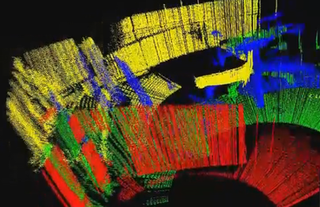

Re-BIS
Overview
Robots capable of switching between snake-like and bipedal motion have advantages of greater manoeuvrability. The ReBiS (Reconfigurable Bipedal Snake) robot is a novel modular design mechanism which can quickly transform between various configurations without rearrangement of modules. Reconfiguration without rearrangement has advantages of lighter weight, lower power consumption and higher efficiency, by eliminating the requirement of actuators and mechanisms needed for rearrangement. The video on the right, shows the gaits implemented on ReBiS. Possible gaits are divided into three categories; snake gaits, transforming gaits and walking gaits. An example gait, belonging each of the three categories, is implemented and presented here.
Design
Our main objective was to design a modular mechanism which can transform from a snake configuration into a walking configuration without any detaching and attaching modules. This eliminates the need of additional actuators and mechanism for docking and undocking the modules. Using modular architecture makes it easy to replace modules or add additional ones to increase the Degrees of Freedoms (DoF).


The figure to the right shows the image of a pair of module of the ReBiS robot. It consists of a C-Clamp, Motor Clamp and a Dynamixel MX-28 Motor. The joint has a rotation angle of +-120 degrees. Each part is custom manufactured by our team on a CNC milling machine at FMS Lab, Mechanical Department of VNIT Nagpur, under Prof. Shital Chiddarwar. The images below show the ReBiS robot during manufacturing and assembly.
The figure on the left shows the software architecture of the ReBiS robot. The implementation of the upper block is done using ROS (Robot Operation System) on Ubuntu 12.04 running on a laptop. ROS framework helps us in using multi-processing along with inter-process communication. The laptop is connected to an ARM Cortex M4 processor, by Texas Instruments, which communicates with the Dynamixel motors. Each Dynamixel motor is connected to TIVA using UART in a daisy chain. The angles for each gait are calculated by the gait generator node, which sends messages to the communicator node. The communicator node sends the messages to TIVA over UART, which then sends the reference positions to each Dynamixel motor.
Research:
ReBiS: Re-configurable Bipedal Snake Robot is a modular open chain mechanism of a snake robot that can walk in multiple configurations. ReBiS achieves re-configuration without any re-arrangements of its modules. This paper introduces a novel optimization based approach to design 9-DOF walking gaits for ReBiS robot which can be used for tasks that are difficult for snake robots to perform such as stair climbing or passing over high obstacles, etc. The generated walking gait moves the centre of mass only in its double support phase, making it more stable. Experimental verification by testing the gait on ReBiS Lite Robot showed that high speed walking gait is generated without obtaining the zero moment point and the same algorithm can be used to generate keyframes for HEAD LOOK gait.
Developing an autonomous motion planning algorithm and doing SLAM:
The Rebis robot is mounted with a wireless stereo camera in its head and LiPo batteries in its tail to make it completely wireless. Hence it can be use for performing spying operations or creating a map of an unknown area. The challenge is to do make everything completely autonomous; such that the robot will decide which is the best configuration for locomotion in the given environment and the same time, dynamically create a map of the environment. We are currently testing our algorithm in a controlled in-door environments. The image on the right is the result of work done by Rohan Thakker for SLAM on ModSnake Robot under Prof. Howie Choset at Biorobotics Lab, CMU.
Exploring new configurations using 11 DOF robot and developing their gaits:
Media:
Team Members:
- Ajinkya Kamat
- Rohan Thakker
- Sachin Bharambe
Fabrication Team :
- Prasad Vagdargi
- Sai Teja
- Akash Singh
- Anshul Paigwar
- Manish Maurya
- Shivam Shrivastav
Project Under:
- Prof. K. Bhurchandi(VNIT Nagpur)
- Prof. Shital Chiddarwar (VNIT Nagpur)